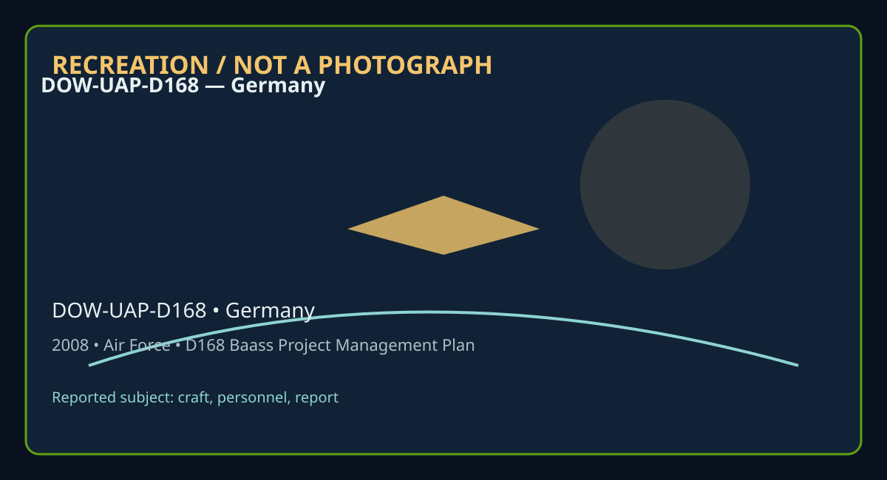

Release 07 / archival case file / DOW-UAP-D168
D168 Baass Project Management Plan December 2008
This d168 baass project management plan places a craft, personnel, report thread in a 2008 Germany record.
ID: DOW-UAP-D168
Filename:
DOW-UAP-D168-BAASS_Project_Management_Plan-December_2008.pdfDate marker: 2008
Location: Germany
Agency or collection signal: Air Force
Pages read: 49

RECREATION / NOT A PHOTOGRAPH. The diagram is an interpretive editorial aid, not source imagery.
What this document says
The opening page's extracted text begins: “IIIIIIW11111,1111 111,11111111,1111ITIIIIII ® Contract HHM402-08-C-0072 ct Management Plan iew Paper) mber 2, 2008”
Across the 49 pages, the recurring terms are craft, personnel, report. Those details belong to this file, not to a generic case template. Page-level reading follows:
- Page 1: IIIIIIW11111,1111 111,11111111,1111ITIIIIII ® Contract HHM402-08-C-0072 ct Management Plan iew Paper) mber 2, 2008
- Page 2: Bigelow Aerospace Advanced Space Studies Contract HHM402-08-C-0072 Project Management Plan (Overview Paper) December 2, 2008 This information 1s proprletaiy and confidential and cannot be disseminated or 11sed witboot prior written consent from the Operating Manager ef BAAss•.
- Page 3: BIGELOW AEROSPACE ADVANCED SPACE STUDIES Staff AAP Person 4 Administrator AAP Person 7 Deputy Administrator Advisors L P Person 57 r p Person 8 Page i This information is proprietary and confidential and cannot be disseminated or used without prior written consent fr 0111 tire Operating Ma11ager of BMss•.
- Page 4: PREFACE Importance of the Work There has been over six decades of intensive activity of advanced aerospace craft in the skies over North America and around the world. These have been witnessed, photographed and chased by military pilots, witnessed by ground crews, by commercial airline pilots and by thousands of military and civilian ground based personnel.
- Page 5: ACKNOWLEDGEMENTS BAAS$ acknowledges the receipt of three sets of documents that were AAP P erson submitted in fulfillment of contracts 081006-1 to the Mutual UFO Network a_.._/,,, (MUFON), 080930-1 to Earthtech International and an assignment to LJ l~P Person Ia BAAS$ employee. These reports that were separately authored by: (1) MUFON, (2) Earthtech lnternat
- Page 6: TABLE OF CONTENTS BAASS Staff and Advisors ..................................................................................... i Preface................................................................................................................ ii Acknowledgements..........................................................................................
- Page 7: SUMMARY This Project Manager Report (PMR) fulfills the requirement to submit a report as part of the Advanced Aerospace Weapon System Application contract HHM402-08-C-0072. The report comprises overview projects that are focused on and include the scope of the final report (due in September 2009) for the twelve following areas: (1) lift, (2) Propulsion, (3)
- Page 8: The nine major projects are: Project Physics was mandated by the DIA to study the current research on all twelve technical areas. Earthtech and its subcontractors will deliver approximately 24 in depth position papers targeted to twelve technical areas by July 31, 2009. Project Engagement will locate and secure small geographic areas that experience very fre
- Page 9: Project Oral History will contact and record interviews with dozens of highly placed individuals from industry and the military who have had direct knowledge of film evidence, physical material evidence, hardware itself, biological tissue and other material as they pertain to advanced aerial technology in the United States over the past several decades. Proj
- Page 10: KEY RECOMMENDATIONS 1) In order for BAASS to provide the optimum result, it is essential that various BAASS staff acquire the necessary clearances as soon as possible. It is our understanding that vital information that is germane to all of the contractor recommendations already resides in government hands. Without these clearances, BAASS will not be able to
- Page 11: amount of information and trace material never reached the small "official" investigation office. We believe we may know exactly where some of that information currently resides. For DIA, the acquisition of the data files known to be excluded from Project Bluebook, on advanced aerospace technology that presently resides at LANL (BAASS affiliated personnel ha
- Page 12: 7) Agency officials should make efforts to be officially available to accompany BAASS senior management during the process of interviewing key participants. The oral history program will be the extraction of information from people about exotic spacecraft who were highly placed within government. In order for many of these people to talk, it is necessary for
- Page 13: behavior has taken the "head in the sand" approach, we krnow that has not been the universal reaction in other countries. Our military future could be seriously influenced. 9) Under the premise that biological material of potentially non-human origin has been recov,ered, at the earliest available opportunity DIA will lobby via interagency connections for acc
- Page 14: INTRODUCTION Scope of Final Report Incorporating each Technical Area This Program Manager Report (PMR) accomplishes the requirement to submit a report as part of the Advanced Aerospace Weapon System Application contract HHM402-08-C-0072. This report comprises overview papers identifying the scope of the final report (due in September 2009) for each of the 12
- Page 15: congressional briefings by the Congressional Research Service (13)." Note: numbers inside parentheses refer to references in the Earthtech report #7. In order to meaningfully tackle the subject areas outlined in the above 12 technical topics, BAASS has been compelled to focus on those projects that are feasible given the current timelines and budget allocati
- Page 16: PLANS OF ACTION WITH MILESTONES AND TEAM COMPOSITIONS PROJECT PHYSICS This project will cover all twelve technical areas. Objectives In November 2008, Earthtech delivered 12 Technical Studies that recommended a wide ranging array of approaches to address the physics and engineering feasibility of advanced aerospace weapons system application as they apply to
- Page 17: research could explain some aspect of behavior over the last six decades of very advanced spacecraft already known to exist. BAASS is contracting with Earthtech for an in-depth six month study to locate through any sources at Earthtech's disposal any information on these more prosaic approaches that have been kicked about for some period of years. Accordingl
- Page 18: Team Composition r p Person 57 r p Person 58 Select Earthtech Subcontractors Page 12 Ttlis information is proprietar,• and confidential and cannot b@ disseminated oc,•sed without prior written consent from tRe Operating Manager of BAA55e.
- Page 19: PROJECT ENGAGEMENT This program shall endeavor to locate possible small geographical areas where novel spacecraft seem to frequent. This program would specifically relate to technical area #9 with possible collateral involvement of other technical areas. Objectives In spite of having confirmation that a significant menu of very novel spacecraft have existed
- Page 20: overview paper can ratify this point. To successfully gather useful data from observations requires cooperation from the spacecraft. Performances must necessarily be continued. The acquisition and implementation of very sophisticated equipment is a challenge. Having the right people and enough human resources in vital. The entire effort requires flexibility,
- Page 21: Milestones We shall initiate the process of identifying possible geographic locations of current or recent past activity during the first quarter of 2009. Also at that time, we shall convene one of several workshops as an ongoing process to plan and strategize approaches and program structure. Of necessity, it is anticipated that project engagement will requ
- Page 22: PROJECT COOPERATION Project Cooperation is the program that could be the most important of all Plans of Action. As previously listed under Key Recommendations, in order to not waste time, in order to not waste mone,y, in order to make this overall program the most productive for which the RFP was constructed and paid for by the Sponsors, the Agency needs to
- Page 23: Methodology Project Cooperation will initiate with the receipt of clearances by the BAASS Administrator. However, while the clearance process is underway, the agency will be focused on uncovering the many sources of information and leads on the topic of anomalous aerospace vehicle performance that reside within its own data archives. This internal agency dat
- Page 24: This program phase called Project Cooperation cannot be over emphasized in its importance. A thorough data-mining of potential information location needs to begin immediately. If successful this project would substantially contribute ito all twelve technical areas. Depending on the speed of cooperation between DIA and BAASS, it is anticipated that this proje
- Page 25: PROJECT CAMPUS This program will seek to involve all twelve technical areas (Lift, Propulsion, Control, Power generation, Spatial/Temporal Translation, Materials, Configuration/Structure, Signature Reduction (Optical/lR/RF/Acoustic), Human Interface, Human Effects, Armament (RF and DEW), Other Areas. Objectives The first objective is to stimulate, motivate a
- Page 26: eventually pose a threat to US national security. Such a significant program would/could provide a serious positive stimulus to academic research in science and math thus furthering the military capabilities of those countries. Our concern is that the top universities/technical institutes in some foreign countries MAY take this subject more seriously than we
- Page 27: Administrator, the comprehensive detailed strategy for reaching out to the academic community in the United States. This will take the form of design of RFPs and design of Letter of Intent (LOI) solicitations. A realistic projection from BAASS is that the milestones in the project should encompass at least three years of effort. Academic turnaround is demons
- Page 28: PROJECT DATABASE This program will address all twelve technical areas. Objectives For six decades there have been displays of advanced aerospace vehicles in the skies of North America and around the world that have been witnessed by thousands of people, including military pilots and ground crews, civil aviation pilots, law enforcement officers and members of
- Page 29: technology cases. The BAASS database will be searchable with keywords specifically designed to interrogate for: Lift, Propulsion, Control, Power Generation, Spatial temporal translation, Materials, Configuration/Structure, Signature Reduction (Optical/lR/RF/Acoustic), Human Interface, Human Effects, Armament, Other areas. Extending into 2010, BAASS will crea
- Page 30: Team Composition BAASS Deputy Administrator IAAP Person 5 L P Person 8 IAAP Person 56 Select BAASS Staff Page 24 This information is proprietary and confidential and cannot be disseminated or used wjtho11t pciac written consent from the Op&rating Manager of BAASS1 .
- Page 31: ORAL HISTORY PROJECT This program will involve all twelve technical areas. Objectives Important information regarding the performance, properties, and even composition of advanced aerospace technology resides in the minds and memories of dozens of highly placed retired individuals, many of whom are known to BAASS affiliated personnel. These individuals becau
- Page 32: of high value people and will have commenced recorded interviews with these individuals. As more and more high value individuals are identified, contracted and interviewed, we view the milestones in this project extending into 2010/ 2011 and beyond. Team Composition BAASS Administrator BAASS Deputy Administrator r p Person 57 Select BAASS Staff BAASS affilia
- Page 33: PROJECT BLUE BOOK MATERIALS This project will cover all twelve technical areas. Objectives It is known to BAASS personnel that a comprehensive group of files of advanced aerospace activity, documented by several branches of the United States military, exists in a secure location at Los Alamos National Labs (LANL). These files are known to have been excluded
- Page 34: Milestones By February 1, 2009, DIA staff will have been apprised by BAAS$ affiliated personnel of the file numbers, exact locations of the advanced aerial phenomena cases that did not make it into Project Bluebook. It is difficult to estimate the length of time required for DIA staff to secure these materials and to pass them in a secure manner to appropria
- Page 35: PROJECT NORTHERN TIER This project will cover technical study 11: Armament. Objectives Beginning in the 1960s, there were numerous well documented sightings by multiple AFB personnel and pilots of incursions into the airspace over the "Northern Tier" air force bases in the United States by advanced aerospace vehicles of unknown origin. Incursions into restri
- Page 36: salient information regarding national security was absent from Project Blue Book files of the Minot AFB incident), but significant amounts of the important details were elided, omitted or obscured. Milestones By March 10, 2009 BAASS affiliated personnel in collaboration with DIA personnel will have located the files that pertain to the Northern Tier sightin
- Page 37: PROJECT COLARES This project will cover technical area 10: Human effects objective. Objectives In 1977, the Brazilian island of Colares was the scene for some of the most aggressive close encounters ever recorded in the open literature. Only a minority of the Island's city of Cola res' approximately 2,000 inhabitants would be spared the light beams shot to t
- Page 38: recorded voluminous data on the nature of the objects that displayed advanced aerospace properties. The objective of the present study is to obtain the files on these incidents. Methodology Beginning in January 2009, an effort will be made through DIA sources to arrange for access from the Brazilian air force of the full set of classified files concerning th
- Page 39: Milestones By March 15, 2009 it is anticipated that DIA personnel in collaboration with BAASS staff will have located the files pertaining to the Colares events. As of December 2008, p,arts of the files are known to be in Brazil, and are the property of the Brazilian Air Force. Approximately 200 pages of these files, in Portuguese, have been posted on the In
- Page 40: CONCLUDING COMMENTS Countless numbers of very novel spacecraft of a wide variety of shapes and sizes have conducted intensive demonstration, exhibitions and interactions across this planet during the last sixty-five years. Therefore, we do not have to look too far to imagine what types of capabilities, and characteristics we would wish our own spacecraft pos
- Page 41: necessary to make purchases of hardware that we think is in foreign hands and to position BAASS to have a global reach. Should we make the opportunities happen where we can obtain physical hardware, we expect to mount a very targeted effort toward back-engineering these materials and/or devices. Page 35 This information is proprietary and confidential and ca
- Page 42: EXHIBITS (1) 1843(a)(2), 1843(a)(1)(B) memorandum 1843(a)(2), 1843(al(JL . fffidavit (B) (3) United Kingdom, Ministry of Defense, F-86D incident - May 20, 1957 Page 36 This information is J}roprietary and confidential and cannot be disseminated or used without prior Written consent from the Operati11g Ma11age1 of BAASS11.
- Page 43: RESEARCH MATERIAL FROM: - 1MP Person 8 NIADQUNlftll • a.1, -- .. S•-118a All MATBIL COMMAND ..... RWS Ill ......"...... , II ............... ............ mm 1843(a)(2), 1843(a)(1 )(B) '°' l. u nqae.W llr Wlt&-t tMrt 11 ..,.,_w W. ~• OCll1,tdan4 -,d•S• ti W. C1& ad ••••d.111 t.111 10-.elJM -n,s., ~. !Id.I ••at• sa .... • s......,.u. ~ a1a ~ "'~£M _. pr-)Sa1•'
- Page 44: ~n }:tJp~~ !~af" ,• l !!! ~ ~ ~i: .,!.. --~s:i I!!( J!}!~~!!r: ; I. ~ f!a r -~1 ..!l § • l i • 1 •· ft;f( ,!!1·e!;t f!llf Flf" J&~'" Jff i,11 !i,: ff J..JJJJ!i ltll uu r-r ~ii _ - _: !If: !!lf~ __ ~ _ -- _ 3 I l n• I 1 .::.L;I •If f •i It r H -. i ! C f I f • l:f f .,. , • - ; l· ' ,.. 1~ I~ i t I • ii It Jf 15 i ,,r, f'i l l, i i Ir r t l,. f I': f f!t I
- Page 45: APPENDIX 2 2002 SEALED AFFIDAVIT OF 1843(a)(2), 1843(a)(1)(B) (ROSWELL ARMY AIR FORCE BASE PUBLI DATE: D ~~~~~---. WITNESS: a NOTARY: (1) My name 141843(a)(2), 1843(a)(1 )(B) (2) I was born o~1843(a)(2) (3) My address is_1_s4_3_(a_)_(2_)___________ (4) I am retired. (5) In July, 1947, I was stationed at the Roswell Army Air Base In Roswell, New Mexico, servi
- Page 46: ---· · ·· the material to higher headquarters. I was to deliver the news release to radio stations KGFL and KSWS, and newspapers the Daily Record and the Morning Dispatch. (11) By the time the news release hit the wire services, my office was inundated with phone calls from around the world. Messages stacked up on my desk, and rather than deal with the media
- Page 47: • · • I • I ~·w; ·:...· ~.--.- -··,, •• •• .... ••• . i I . • • • • • . • • • I • • • • • • • ' g ' i ·:__• _. :\ ...,·-. :~ •·... ..,.;_/.~;:_-;._:;:_> . .'j . §I _ ~ it1:1111:il'• lfJtilfl'!'! , , .•: ! • .II ~ r P'J s :1 ::,111:11,itl•r,t1Uiflh)1 r i ; !~ 1•,,-.1I1·f I 11''1ltlf~·-I • .! s ,.rI ;,t ... r._ I. rf I', f'1 . .. .! ·!!I"'111''1'1·I • • · t •
- Page 48: 1 . . ' . .),. , .· :.ii:::,::·:·::?~ftt,\. •. .. ··: :111111111·· •1·t'ft lliil!•!1·11rri9 .:. ;..:, •• · ' I ·1'1 •=1 •1111.,. f..r. 1 iill 'I !J."''t•' ·!1-It .• ..1 ·•11·1•·: . 1,,,rl,,t, t 'IJ•ld•ell~il!'~~• • •• l Jtrl;,_.;_!ftr1.·,_.l11:11e:111•,·1'i~J ·. I i ~ •• t1 1t • I .,,. :,!li1fh!~l!1.i 11:11,1t:-1l1!•!· .·. i I I, t t ·1t -1 i•:I 1•~ :.-' t I
- Page 49: . , -- . - . . .... .... ~ ~ [11 1 I ., ·; .• .,_,.. • ··• ?~:;•<it<!.-!'""·•· ••• i ,... .._ . •.. •: • • • . . .... • .:-:--: . '-....,,., ,;r-: •,:.': . . • I . '• ~ •.:. ~, .):!-t . . . ,.. ...-:.-'1 -.1,, . •, ...J ••• •' l i ,r ... .1:.·:···••. .•.·,. - ·;•· .,_.•·=·· -~ ....~~.~..__ "--~ : • . .. ' Iii' n1u1l1~!:::l•;r,,~{i,':'fJ;flt\tt•,·•,~,-,~t,{J.
Historical context and disclosure schema
Read in context, this record belongs to the 2008 information environment: Air Force paperwork, a Germany setting, and the reporting conventions visible in the source. Its broader disclosure value is procedural as well as anecdotal: it shows how an observation, material question, investigation, or analytical program was routed, described, and preserved. That makes it comparable to other Release 07 records without collapsing unlike evidence into one event.
Appendix 2: the Roswell affidavit account
This file includes a reproduced 2002 sealed affidavit attributed to a former Roswell Army Air Base public-information officer describing what he said he observed in July 1947. The affidavit says he was taken to Building 84, also identified as Hangar P-3, where he viewed an object recovered north of Roswell.
The object was approximately 12–15 feet long, about 6 feet high, egg-shaped, and apparently metallic. The statement says there were no visible windows, portholes, wings, tail section, or landing gear. It also describes seeing what appeared to be two bodies beneath a canvas covering, being told that a temporary morgue had been established, and being told the wreckage was not radioactive.
The affidavit further records the witness's conclusion that he had observed a craft and crew from outer space. That conclusion is the witness's interpretation, not an independently verified finding in this document.
Evidence status and limitations
This is important material to identify, but it must be dated correctly: the affidavit is signed in 2002, roughly 55 years after the alleged events. The reproduced pages contain extensive redactions, and the account is retrospective. It should therefore be presented as a later sworn recollection preserved inside a 2008 BAASS project-management file—not as an authenticated 1947 recovery report or independent proof of non-human technology.
The source establishes that this document exists and records what its authors or quoted witnesses wrote. It does not, by itself, prove the identity, performance, origin, or physical reality of the reported subject. Extraction preserves wording but cannot restore missing attachments, authenticate provenance, or independently validate testimony. Interpretations beyond the page-specific record remain hypotheses.
Source: supplied PDF in research/tranche-07. This article is a research aid, not a claim that the reported object was non-human.